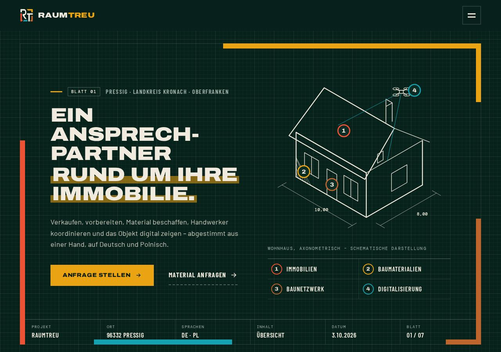

v11.0.0 nowa · ciemny/jasny
Werkplan: połączenie v4 i v5 po swojemu
„Teczka projektu”: ciemna strona z kratką milimetrową, a sekcje jako jasne arkusze rysunkowe z podwójną ramką i rogami w kolorach działów. Nagłówki Archivo (v4), etykiety Barlow Condensed i wymiary DM Mono (v5). Hero z rysunkiem domu i belkami ramy, taśma konturowa, bento działów ze znacznikami, legenda „Vorhaben”, kroki jako stos arkuszy, tabliczka Verfasser, mapa + tabela odległości, CTA z belkami i stemplem. Jasny motyw: cała strona na papierze milimetrowym.